<div class="cover-content"> <h5 class="cover-title">第三周讨论<br>郭守敬和几台望远镜</h5> <strong class="cover-team">Bill Feng</strong> <div class="cover-date">2026.9.22</div> </div> <!-- s --> <div class="middle center"><div style="width:100%"><h1>Part 1 · 郭守敬</h1></div></div> <!-- v --> # 郭守敬是谁 <center><p>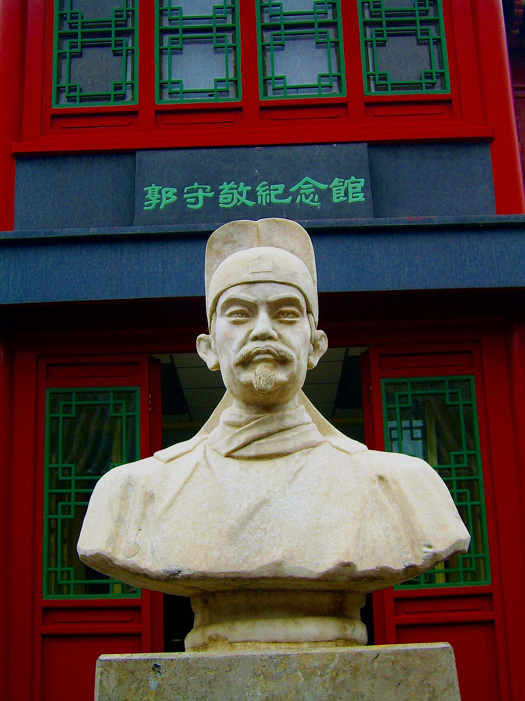</p></center> - 元朝人，1231 年生在河北邢台，爷爷把他带大 - 天文学家，还管水利、算数学 - 三百多年后，传教士汤若望叫他「中国的第谷」 <!-- v --> # 他做的四件事 - **改历法**：1281 年《授时历》说一年 365.2425 天，和今天的公历一样，比欧洲早了三百年 - **造仪器**：简仪把浑仪上层层叠叠的圆环去掉，量得更准；高表配景符，测日影更细 - **测全国**：1279 年的「四海测验」，27 个观测点，南到南海、北到贝加尔湖一带 - **修水利**：他管都水监，开挖通惠河，运粮船能直接开进大都 <!-- v --> # 简仪与观星台 <center><p>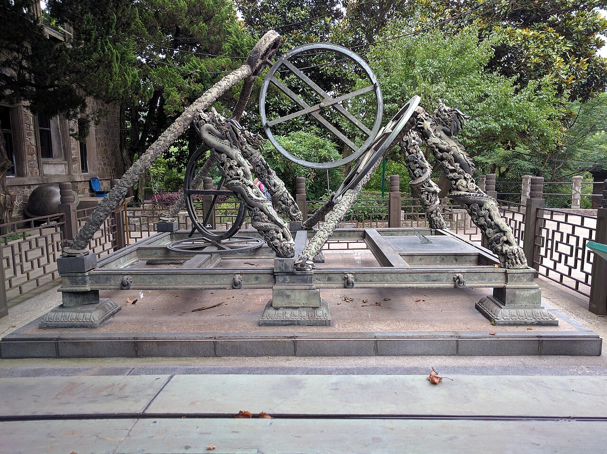</p> <p>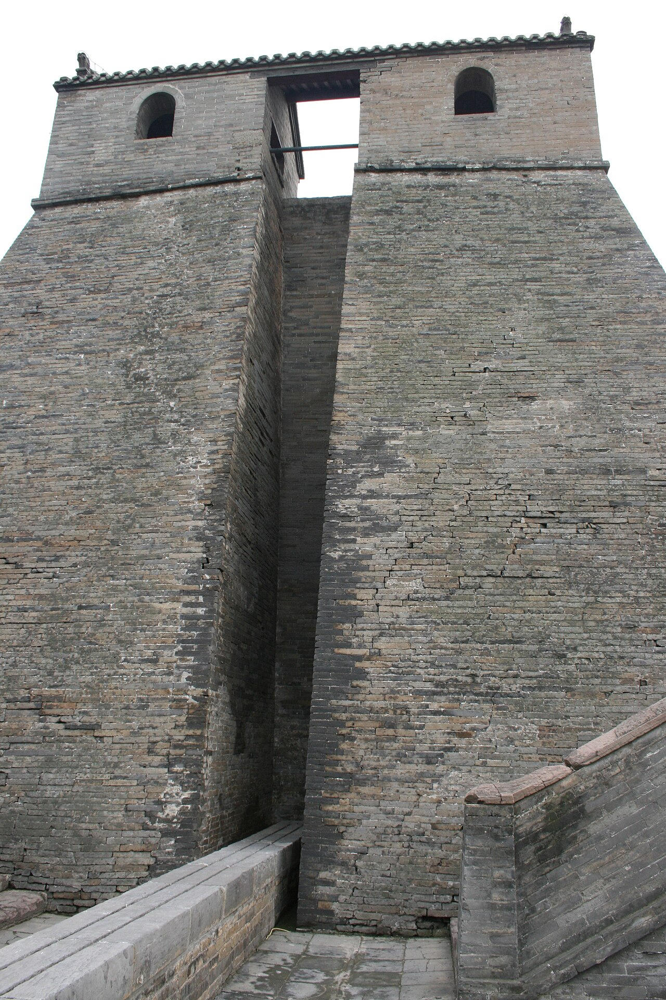</p></center> - 左边是简仪：明朝按他的原样仿的，现在在南京 - 右边是登封观星台：他就在那儿量日影、定节气 <!-- v --> # 一次量遍全国 <center><p>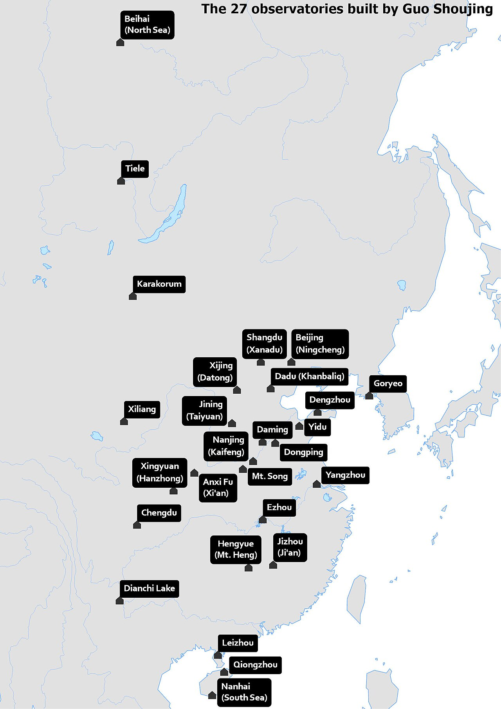</p></center> 1279 年，全国 27 个点一起测。图片来源：维基共享资源 <!-- v --> # 他的成就跟国外有关吗 | 有交流的痕迹 | 自己的积累 | | :-- | :-- | | 元朝把欧亚的路打通了 | 《授时历》用的是中国传统算法 | | 1271 年设了回回司天台 | 简仪是从浑仪改出来的 | | 札马鲁丁带来西域仪器和《万年历》 | 改历团队没直接翻译阿拉伯的书 | - 结论：交流给的是环境和参照，关键方法还是自己积累的 - 席文专门写过：为什么《授时历》受外来影响很小 <!-- s --> <div class="middle center"><div style="width:100%"><h1>Part 2 · 太空里的望远镜</h1></div></div> <!-- v --> # 三台望远镜 | | 哈勃 HST | 韦布 JWST | 罗曼 Roman | | :-- | :-- | :-- | :-- | | 发射 | 1990 | 2021.12 | 2026.8.30 | | 位置 | 近地轨道 | 日地 L2，150 万 km | 日地 L2 | | 主镜 | 2.4 m 单块 | 6.5 m，18 块拼接镀金 | 2.4 m | | 集光面积 | 4.5 m² | 25.4 m² | 4.5 m² | | 波段 | 0.1–2.5 μm | 0.6–28.5 μm | 0.48–2.3 μm | | 视场 | 小 | 小 | 0.28 deg² | <center><p>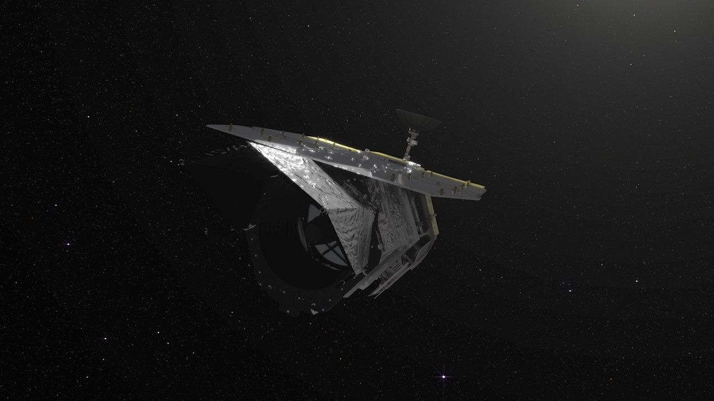</p></center> <!-- v --> # 两台机器长什么样 <center><img src="astro.assets/hubble.jpg" height="340" alt="哈勃"> <p>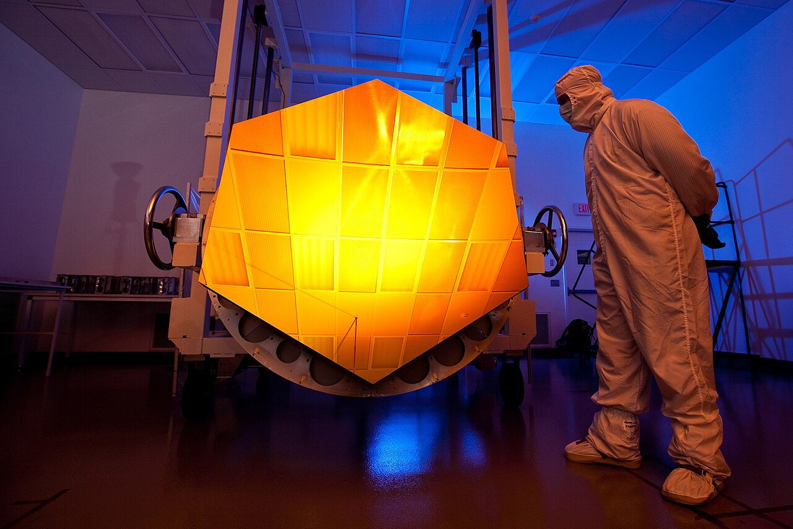</p></center> 左边是哈勃（2009 年最后一次维修后）；右边是韦布拼起来的镀金主镜。图片来源：NASA <!-- v --> # 技术怎么变成看得更远 - 镜子越大，收的光越多：集光能力 ∝ D²，韦布大约是哈勃的 6 倍，所以能看更暗的东西 - 看得清不清看「波长 ÷ 口径」（θ ≈ 1.22 λ / D）：红外波长长，想让细节清楚就得把镜子做大。韦布口径是哈勃的 2.7 倍，才勉强打平哈勃在可见光下的清晰度 - 探测器换了代：可见光的 CCD 换成红外阵列，罗曼一次用 18 块，约 3 亿像素 - 还得把望远镜冻着：镀金镜 + 五层遮阳板，不然它自己的热就把红外信号盖住了 <!-- v --> # 同一片星云，两种拍法 <center><p>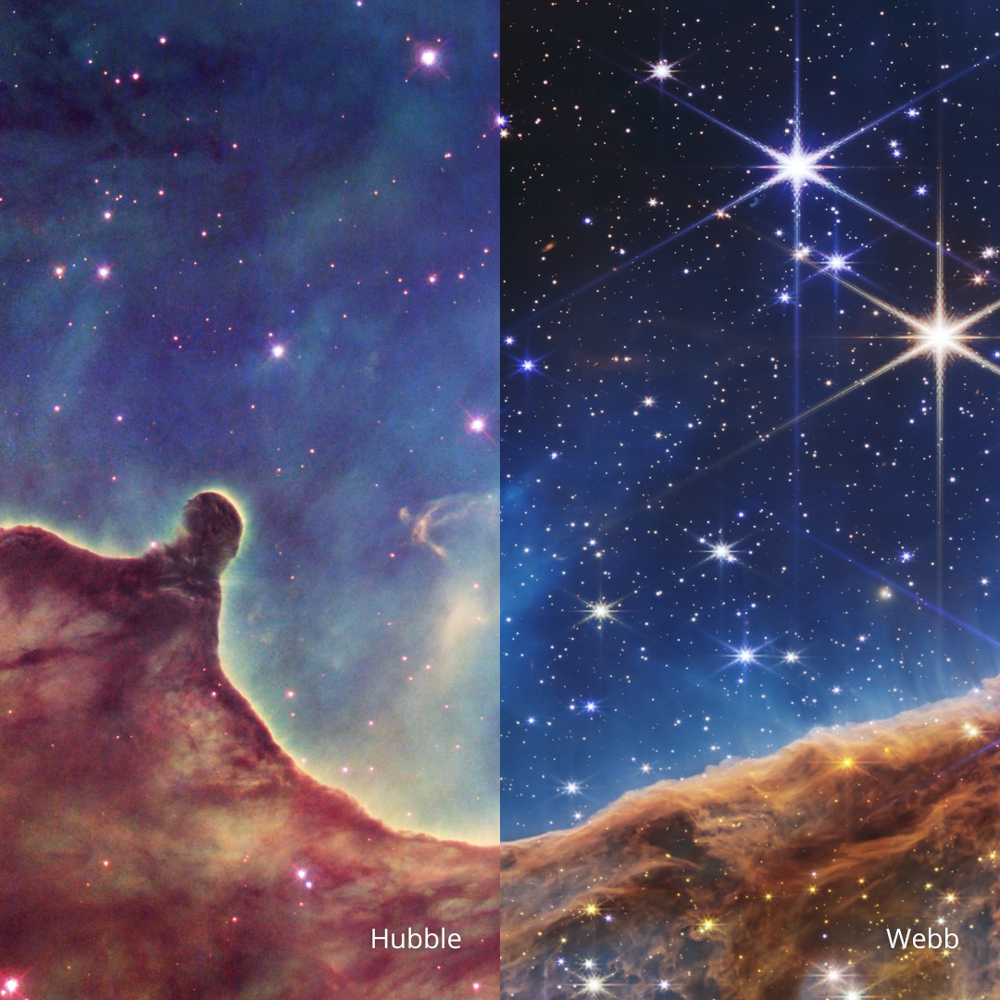</p></center> 哈勃拍到的是尘埃的样子；红外能穿过尘埃，韦布把里面正在出生的恒星露出来了。 <!-- v --> # 创生之柱 <center><p>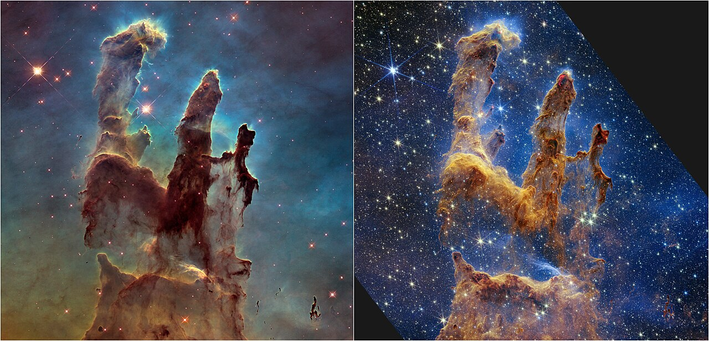</p></center> 同一根尘埃柱，右边的韦布把裹在里面的年轻恒星拍出来了。图片来源：NASA / ESA / CSA / STScI <!-- v --> # 深场：越看越远 <center><p>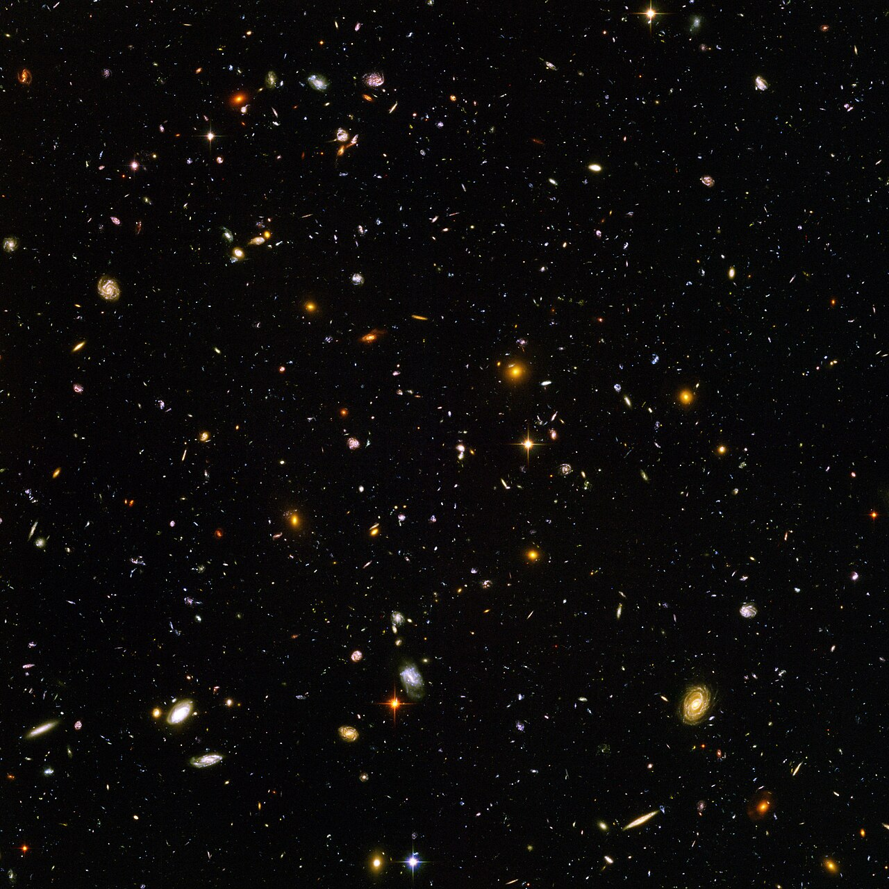</p> <p>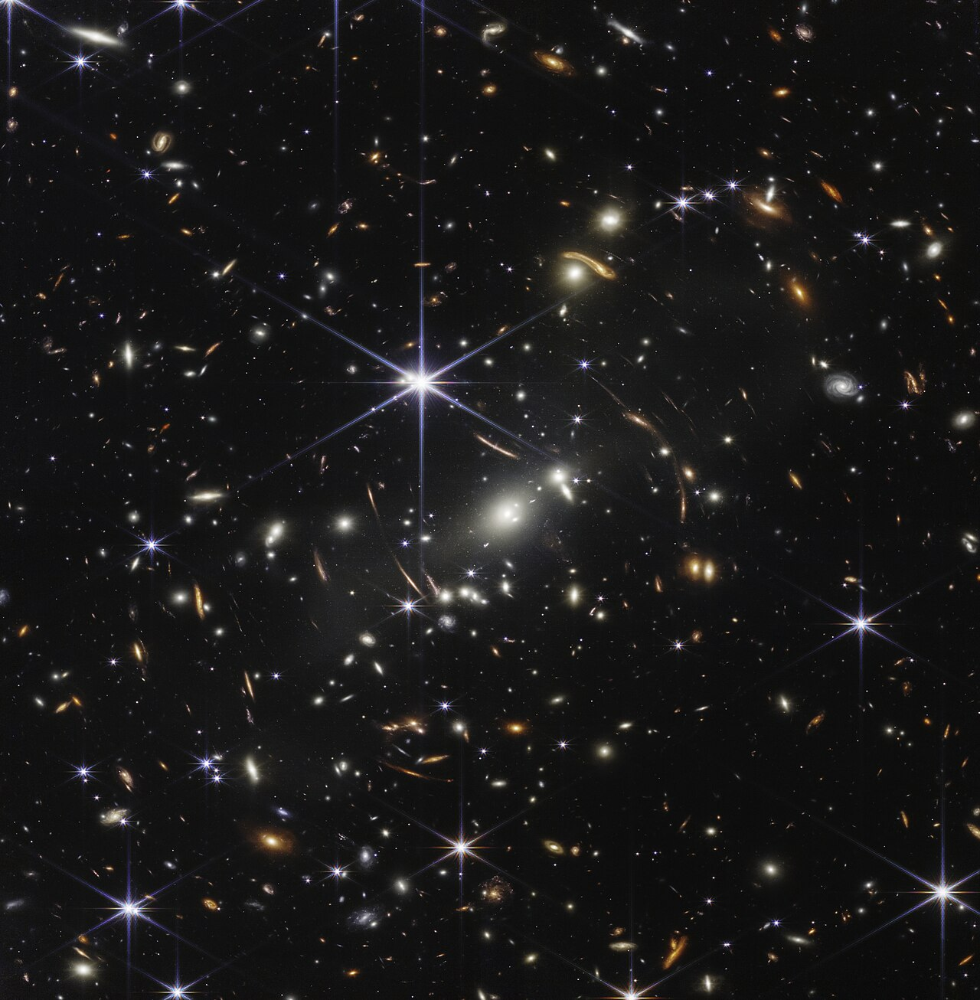</p></center> 左：哈勃超深场（2004）；右：韦布第一深场，曝光 12.5 小时。引力透镜的弧更清楚，更远的星系也进来了。图片来源：NASA / ESA / CSA / STScI <!-- s --> <div class="middle center"><div style="width:100%"><h1>Part 3 · 中国的两台大家伙</h1></div></div> <!-- v --> # LAMOST（郭守敬望远镜） <center><p>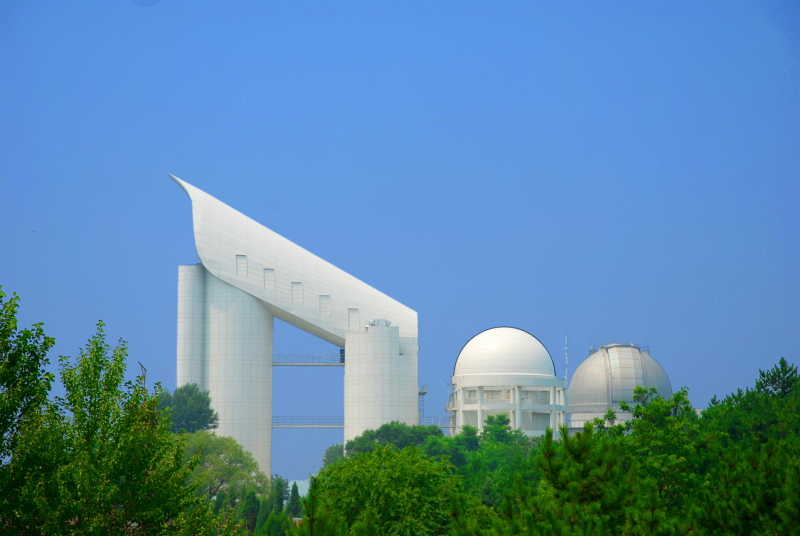</p></center> - 在河北兴隆观测站，2010 年冠名「郭守敬望远镜」 - 焦面上 4000 个光纤定位单元，一次最多同时取 4000 条光谱 - 从光谱里能读出恒星多热、含什么元素、往哪跑 <!-- v --> # 它和普通望远镜不一样 | 普通望远镜 | LAMOST | | :-- | :-- | | 拍照片：每个点只记一个亮度 | 拍光谱：一次 4000 个目标同时开工 | | 一次看一小块天区 | 5° 视场，一晚上万条光谱 | | 回答「长什么样」 | 回答「是什么、多远、在怎么动」 | - 焦面上 4000 根光纤各对准一颗天体，把光分别送进 16 台光谱仪 - 图好不好看不重要，它要的是给银河系做统计的大样本 <!-- v --> # FAST（中国天眼） <center><p>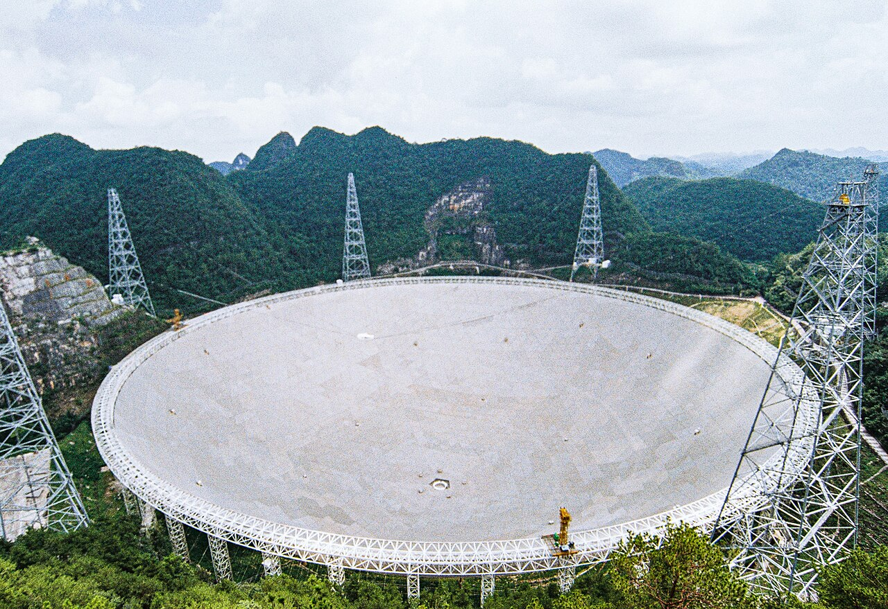</p></center> - 在贵州平塘的大窝凼，2016 年开光，2020 年正式开放 - 反射面 500 m，几千块三角板实时变形；真正用到的是中间 300 m - 看的是 10 cm–4.3 m 的无线电波，到 2024 年已发现 900 多颗新脉冲星 <!-- s --> <div class="middle center"><div style="width:100%"><h1>从 27 个观测点到 150 万公里外</h1></div></div>